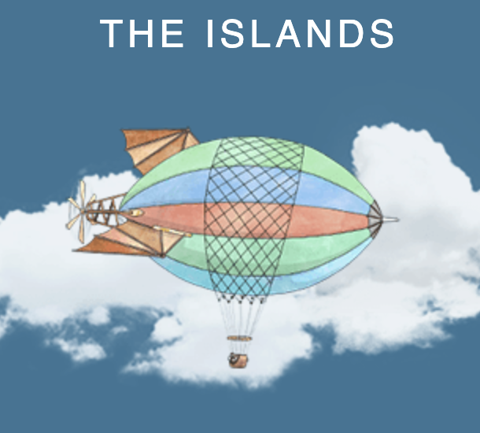

One of my favorite class activities involves the virtual world known as The Islands. Students, too, love the project.
Author
Jo Hardin
Published
June 2, 2022
The Islands

The Islands is a virtual environment designed to engage students in experimental design and data collection. The basic idea is that people (and their pets!) live on villages spread out along three different islands. They go to school, get sick, have friends, have jobs, etc. The individuals are able to do tasks (e.g., drink vodka or run a mile or both!) and to answer questions. They sleep at night (to the dismay of your night-owl students who want to do their data collection in the wee hours); they sometimes back out of the study; and they sometimes lie to you (e.g., about their age).
If now is the first time you are hearing about The Islands, I recommend that you read what others have written and ask to explore them on your own. You will be amazed at the sophistication of the virtual world contained on The Islands.
For the last few years, I’ve used The Islands as a way to tie together many of the topics I cover in my introductory statistics course at Pomona College. I start the project early in the semester (the first exploration is done before spring break, and the pilot study is due a week after).1 When we start, there is still a lot of material left to cover, so in some ways the students are in the dark. One of the requirements is that they must choose a continuous response variable; they also need a few explanatory variables (some numeric, some categorical) and a treatment variable of interest. The treatment doesn’t have to be randomly assigned (the study could be observational), but almost every group uses a randomly assigned treatment variable in order to be able to assess causation at the end.
Among the very cool things on The Islands (really, go check it out yourself, there are way too many things to tell you about) is the Academy which includes journal articles describing studies that have taken place on The Islands in the last few years.
In what remains, I’ll describe some of the unique aspects of the project. Additionally, from both my perspective as well as from my students’ perspectives, I provide some of the feedback on successes and challenges of the project.
Power Analysis
One of my favorite aspects of The Islands project is the ability for students to do a power analysis on pilot data. I find power to be a difficult concept to teach. Not only are the technical aspects usually pretty hard, but the intuition is also really hard (especially for students who haven’t yet done any data collection of their own). The power analysis part of the project allows me, the instructor, to do all of the work, and the students just need to wrap their heads around what is happening. I have each group post their data to a Google sheet, and then I pull in the data and run a quick power analysis assuming the difference in \(\mu\) values is the same as what we saw with the pilot data (the difference in \(\bar{x}\) values). The students then change the sample size and the effect size to come up with scenarios that would give them a power of 0.7. Their reflection has them questioning whether or not the effect size is real and whether or not they have the resources to collect the number of observations needed for a power of 0.7.
Below I’ve laid out the code and instruction that I give to students so that they can determine the needed sample size that would give their experiment a power of 0.7. In the sample data I’ve had half of the participants take 10g of Psilocybin Mushrooms (the other half is the control), then I have the participants balance on one leg for as long as they can (before and after the treatment, the response variable is the difference in time spent balancing).
Code
library(tidyverse)library(janitor)library(googlesheets4)gs4_deauth()# a fake data collection made up for this blog entrypilot_data <- googlesheets4::read_sheet("https://docs.google.com/spreadsheets/d/1U0KcehbSQkEjwDaFpUSklKmIkUTUv-C_5q2kyO1vn24/edit?usp=sharing0") %>% janitor::clean_names()pilot_summary <- pilot_data %>%group_by(treatment) %>%summarize(n(), mean_resp =mean(difference, na.rm =TRUE),s_resp =sd(difference, na.rm =TRUE))pilot_summary
# A tibble: 2 × 4
treatment `n()` mean_resp s_resp
<chr> <int> <dbl> <dbl>
1 Control 12 1.25 12.6
2 Psilocybin Mushrooms 10 g 12 13.8 15.3
For use in the sample size calculations, pull out each number from the summary:
The estimated variability for the difference in sample means.
[1] -12.52948
[1] 5.709265
How big should the sample size be?
The task is to figure out how big the sample size should be in order to reject \(H_0: \mu_1 = \mu_2\) with power of 0.7. Reasonable assumptions will be made based on the information above.
Step 1. How far will \(\overline{X}_1 - \overline{X}_2\) need to be to reject \(H_0\)?
In order to reject \(H_0\) at the 0.05 level (two-sided test),
\[\mbox{Z-score} > 1.96\]
Which means: \[\overline{X}_1 - \overline{X}_2 > 1.96 \mbox{ SE}\]
Step 2. Assume that the variability is as calculated above from the data but with new sample sizes.
The \(SE(\overline{X}_1 - \overline{X}_2)\) will change based on the values of \(n_1\) and \(n_2\). Continue to use \(s_1\) and \(s_2\) calculated from the pilot data.
Change the values of n1_test and n2_test to see that SE_diff changes!
For a very rough approximation, use the normal curve to find out how often the difference in means will be above the cutoff (from Steps 1 and 2) for various true alternative hypotheses.
If the true alternative difference is 0.1, then xpnorm()centered at 0.1 (the curve below is not centered at zero) provides the probability that the sample difference will be above the cutoff.
Under the setting: \(H_A: \mu_1 - \mu_2 = 0.1\)
The alternative value of 0.1 is made up. What types of reasonable differences are suggested by the pilot data? Use those!
Do the pilot data suggest that a reasonable difference is actually negative? If so, make sure your power calculation finds probability in the “less” direction instead of the “greater” direction (or alternatively, subtract \(\mu_2 - \mu_1\) instead of \(\mu_1 - \mu_2\)).
With samples of size 10 each, the probability of rejecting \(H_0\) is 0.0259471 (= the power!). Re-do steps 2 and 3 with different \(n_1\) and \(n_2\) values. What sample sizes produce a power of 0.7?
Reproducibility
All of the assignments are due as .pdf files which have been compiled from .Rmd files. The analyses start by pulling in the data directly from the Google sheet, and each student in the group is able to run the entire analysis from start to end. The students are comfortable working with RMarkdown, but this is the first time that their compiled analysis is a full report.
The project described here is for a first course in Introductory Statistics. We do not use GitHub (yet!), but we do work entirely in RMarkdown documents. We have some difficulties in getting each individual in the group to work on one .Rmd document. We use RStudio PRO, but we have not been able to set-up group sharing projects. RStudio has described products that allow groups to work simultaneously on a single document.
Regardless, working on one report that is reproducible allowed students to bring together not only the statistical ideas from the course but also the larger ideas on how data collection, analysis, and communication all combines into a single effort.
Ethical considerations
While the context, people, and data are all completely fabricated, there is still room to bring ethical considerations into the project.
The ethical considerations may be as simple as having the class read the policy brief and talk about how, historically, data collection has disproportionately affected different groups. In particular, collecting data is often used as a way to sustain systems of power and privilege. Although the Islands do not represent actual humans, the way we talk and think about them could impact our students directly. Additionally, for students who are soon to be data practitioners, a conversation about the power of information can help them bring positive nuance into their future work as data scientists.
Of course, one conversation about data sovereignty will not change all systems of oppression or even, necessarily, how a group of students approaches a dataset. However, the more often the ethical considerations can be infused as part of the data analysis, the more the students will reflect on the larger and humanistic aspects of the process. Indeed, the ethical considerations could be much expanded into written reflection, student presentations, or a research project.
Pulling everything together from the entire semester
One of the strengths of the project is its ability to pull together many of the topics covered from throughout the semester. The students are able to use hypothesis testing to assess whether or not their randomization scheme worked. They run a power analysis and see in real time what the “next” sample (i.e., the full dataset after the pilot study) looks like in terms of spread, center, and shape.
The students practice making data visualizations and running tests. The last topic of the semester, multiple linear regression, shows up as a way for them to consider all of the variables collected.
Most students are quite curious about connections to the existing literature (both in The Islands and in the real world). Some of the experiments pan out as expected, and some give strikingly different result from what is seen in the literature.
And last, students get a taste for what it is like to work with data in the wild. For example, you might have noticed that the data provided had gender coded with capitals and lower-case starts. Non-systematic data coding was ubiquitous both within individual students and across group members. By making mistakes with the variable coding and writing code to clean the data, students deeply understand why having clean data to start with is so important.
# A tibble: 7 × 4
# Groups: treatment [2]
treatment gender mean_age sd_age
<chr> <chr> <dbl> <dbl>
1 Control Female 34.6 22.8
2 Control Male 42.7 33.2
3 Control male 50.5 27.6
4 Psilocybin Mushrooms 10 g Female 62.5 43.8
5 Psilocybin Mushrooms 10 g Male 47.5 25.7
6 Psilocybin Mushrooms 10 g female 77 NA
7 Psilocybin Mushrooms 10 g male 63 NA
Observations
I conclude with some feedback provided by the students (and me) on the project. Overall, it was an excellent experience with mostly positive comments. Of course, there is always room for improvement in all the things we do.
Student Reflections
positive
there are so many cool options for what to study in the Islands.
like the idea of humans but not actually humans (freeing from the existing literature).
it was fun to make the islanders do unethical activities.
the project encouraged a mindset of curiosity and exploration.
next time, they would collect more demographic or related variables.
many students had personal motivation for their experiment choices.
the students enjoyed working together with peers.
the project reinforced skills that will transfer to other classes and future research.
negative
the power analysis was hard.
because it wasn’t “real-world”, they couldn’t necessarily build on the literature.
it took a long time to do tasks.
the students forgot that they needed to come back to record follow-up.
staying focused to get the right data was a challenge.
coming up with a good research question was hard.
My reflections
positive
students were able to reflect on needing bigger sample sizes (although for most of the non-significant studies, \(H_0\) was probably true, making sample size almost a moot point)
in-class presentations, the other students asked great questions about the experimental design or other nuances of the study.
across the groups, there was an investigation of many different sampling types.
systematic sampling by looking at every 4th house
cluster sampling by collecting all students on a particular island in a particular high school
multi-stage sampling (systematically choosing a house and randomly choosing a person in a house)
students reflected on whether the variables were realistic, e.g., the number of times a ball could be bounced in a minute seemed to be about half of what would be realistic for human students with a basketball.
the project reinforced working with R to code, make graphs, and present work in a reproducible format.
the students were able to recognize that the data collection part:
takes a huge amount of time (way more than the analysis!),
is really hard to do well, and
matters more than the choice of analysis technique.
negative
students want quick experiments (e.g., weight loss on a given diet isn’t realistic over a few days).
almost all the project results are not significant.
there is a tendency to do a paired analysis (before and after).
the power analysis above uses a Z score, but the analysis uses a t-test (which can be confusing for students who are only just being introduced to the topics).
the tools do not yet exist to synchronously do group work in a shared Rmd file. hopefully this is changing with new tools from RStudio. (Note, for classes which use GitHub, synchronous work is more accessible for students.)